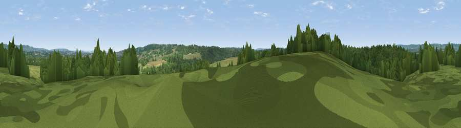

Viewpoint near Leigh
#42752 in England · top 69% of its area beats it · near Leigh · path 92 mWhere it is
The exact computed spot (TQ 53925 45575). Click the marker for map links.
Public access: the nearest public right of way is about 92 m away — the final stretch may cross private land. Computed from Natural England's CRoW access layer and OpenStreetMap rights of way — not the legal definitive map. Always verify locally.
The view, rendered

A 360° render of this exact spot computed from the terrain model, tree cover and land cover — summer colours, afternoon light, calibrated against photographs of famous viewpoints. Real trees, hedges and buildings will differ in detail.
The panorama
Grey silhouette: terrain skyline in each direction (720 bearings, Earth curvature and refraction included). Dashed green: skyline with trees (+15 m) and buildings (+8 m) as obstacles. Blue strip: how far the ground is visible on each bearing.
Where the view opens
Wedge length = distance to the farthest visible ground on that bearing (vegetation-aware). Rings at 10, 25 and 50 km.
What fills the view
52% woodland · 39% grassland · 8% cropland · 1% built-up
Angular shares of the visible panorama (visual magnitude), not map area. Landscape diversity 0.42 (0–1 Shannon).
Key numbers
More beautiful places nearby
The staircase of upgrades: each row has a higher view potential than everything closer. Driving times are estimates from straight-line distance, calibrated against real road routing — check an actual route before setting out.
| Place | Direction | Drive | Score |
|---|---|---|---|
| Viewpoint near Chiddingstone Causeway | WSW · 1 km | ~4 min | 26.9 |
| Viewpoint near Penshurst | SSW · 2 km | ~6 min | 35.0 |
| Viewpoint near Speldhurst | S · 3 km | ~7 min | 37.5 |
| Viewpoint near Bidborough | SE · 3 km | ~8 min | 38.5 |
| Viewpoint near Bidborough | ESE · 4 km | ~9 min | 38.8 |
| Viewpoint near Sevenoaks Weald | NNW · 7 km | ~14 min | 60.2 |
| Viewpoint near Ide Hill | NNW · 7 km | ~15 min | 62.7 |
| Viewpoint near Shipbourne | NNE · 8 km | ~16 min | 63.0 |
51.18868, 0.20123 · source: screening · position refined by local search. Computed location — check access rights before visiting.